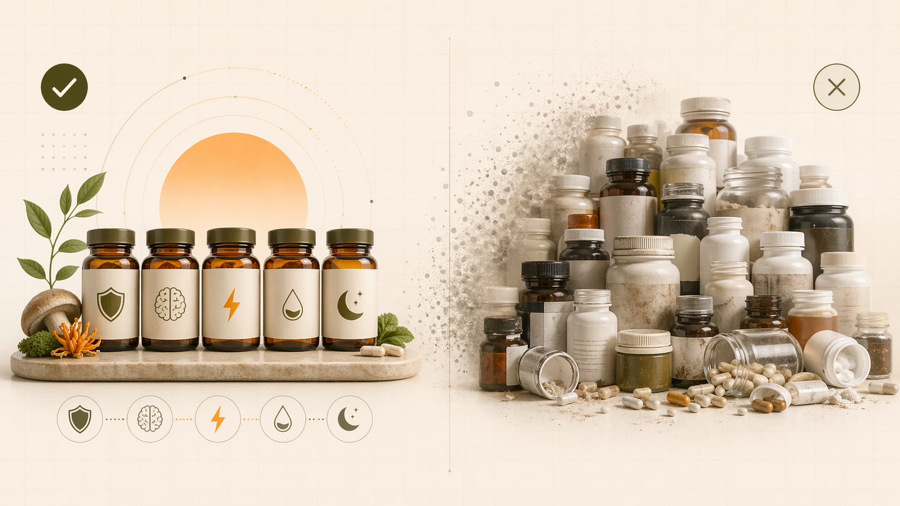

Ты входишь в аптеку и видишь стену из 300 баночек БАД. Каждая обещает чудо. Твоя полка дома уже завалена витаминами, которые ты иногда пьёшь, часто забываешь. Баночка стоит $500 на год для одного витамина. Умножь на 10-20 баночек, получится $5000-10000 в год. Результат? Никакой или едва заметный.
Правда в том, что человеку на максималках нужно всего 5 добавок, не 50. Остальное это маркетинг. Эти 5 критических БАД охватывают 80% нужд организма. Остальные 20% решаются через еду и сон.
Разбираем минимальную систему, которая работает, и почему 95% БАД на полке это пустая трата денег.
Ключевая идея: минимальный стек из 5 добавок закрывает базовые дефициты и работает как система, а не как набор случайных покупок.
| Категория БАД | % от рынка | Есть ли научная база? | Реальная эффективность |
|---|---|---|---|
| «Экзотические» добавки (асаи, ягоды годжи, мака) | 30% | Слабая (маркетинг > наука) | 10-15% (плацебо) |
| «Чудо-комплексы» (30+ ингредиентов) | 25% | Нет (слишком много конфликтов) | 5-10% (ингредиенты конкурируют) |
| Синтетические витамины низкого качества | 20% | Да, но с низкой биодоступностью | 20-30% (часть не усваивается) |
| БАД с сомнительной эффективностью (укрепление суставов, молодость кожи и т.д.) | 15% | Очень слабая | <5% (обычно плацебо) |
| Качественные, научные БАД (5-7% рынка, включая MYKORA) | 5% | Сильная (исследования, публикации) | 60-80% (реальный результат) |
Зачем: адаптоген (нейрозащита, NGF для мозга, полисахариды для иммунитета)
Дозировка: 5-10 мл в день (в зависимости от целей)
Результат: ясность ума через 3-5 дней, иммунитет через 2-3 недели
Почему именно летипорус: это всё-в-одном. Одна баночка заменяет ноотроп + иммуностимулятор + адаптоген. Синтетический витамин С даёт витамин С, летипорус даёт целую систему поддержки
Зачем: регулирует иммунитет, синтез белка, настроение, здоровье костей
Дозировка: 2000-4000 МЕ в день (зависит от солнца, географии)
Результат: настроение стабильнее через неделю, иммунитет крепче через 3-4 недели
Почему именно D3: исследования показывают, что дефицит D3 есть у 80% людей в умеренном климате. Это не роскошь, это необходимость
Зачем: расслабляет мышцы, улучшает сон, энергия в клетках (кофактор для 300+ ферментов)
Дозировка: 400-500 мг в день (вечером)
Результат: глубокий сон через 3-5 дней, мышцы болят меньше через неделю
Почему магний, а не поливитамин: магний это масло для машины. Без масла машина прокляты. Магний есть в каждой клетке. Дефицит вызывает 90% проблем (бессонница, мышечные спазмы, тревога)
Зачем: противовоспалительное, питание мозга, здоровье сердца
Дозировка: 2-3 г в день (в составе рыбьего жира или водорослей)
Результат: суставы двигаются легче через неделю, ясность ума через 2-3 недели
Почему Omega-3: организм не может синтезировать это из воздуха. Нужно из еды (рыба) или БАД. Если не ловишь рыбу каждый день — нужна добавка
Зачем: иммунитет, заживление, восстановление мышц, мужское здоровье
Дозировка: 15-30 мг в день (в составе пищи или БАД)
Результат: раны заживают быстрее через неделю, иммунитет через 2-3 недели
Почему цинк: дефицит цинка замедляет восстановление на 40-50%. Спортсмены, люди на максималках быстро теряют цинк через пот и мочу
| БАД, которую видишь на полке | Обещание | Реальность | Вердикт |
|---|---|---|---|
| Витамин A, E, C отдельно | Защита от старения | Усваивается 20-30%, конкурирует с другими витаминами | Получишь из еды, не нужна добавка |
| Коллаген (колла) | Молодая кожа и суставы | Разрушается в желудке, а не усваивается как коллаген | Результат есть от витамина C + белок, не от коллагена |
| Куркума (куркумин) | Противовоспалительное чудо | Биодоступность < 5% (нужен чёрный перец + жир, тогда работает) | Результат даёт Omega-3 + летипорус (натуральный противовоспалитель) |
| Биотин, отдельные витамины B | Волосы, кожа, ногти | Легко получить из еды (яйца, мясо, зёлень) | Не нужна добавка, если ешь хорошо |
| «Энергетические» напитки (элеутерококк и т.д.) | Энергия на весь день | Кратковременный эффект от стимуляции, потом падение | Кордицепс работает лучше (ATP вместо стимуляции) |
| Пробиотики (живые бактерии) | Идеальный пищеварительный тракт | Бактерии умирают в желудке при достижении (нужен энтеросолюбильный) | Пребиотик (летипорус) лучше: питает уже живущие бактерии |
Это не просто таблетки, это система. Зачем она работает:
Люди думают: больше БАД = лучше результат. Это неправда. Это как добавлять больше ингредиентов в рецепт — в какой-то момент блюдо становится несъедобным.
MYKORA выбрала 5 БАД, которые работают вместе. Это не гениальное изобретение, это просто наука. Каждый исследователь микробиома, нейролога, спортивной медицины скажет: эти 5 БАД это базис.
Летипорус + D3 + Магний + Omega-3 + Цинк. Результат за неделю. Цена в 10 раз ниже, чем сто баночек с полки аптеки.
Начать с 5 добавок